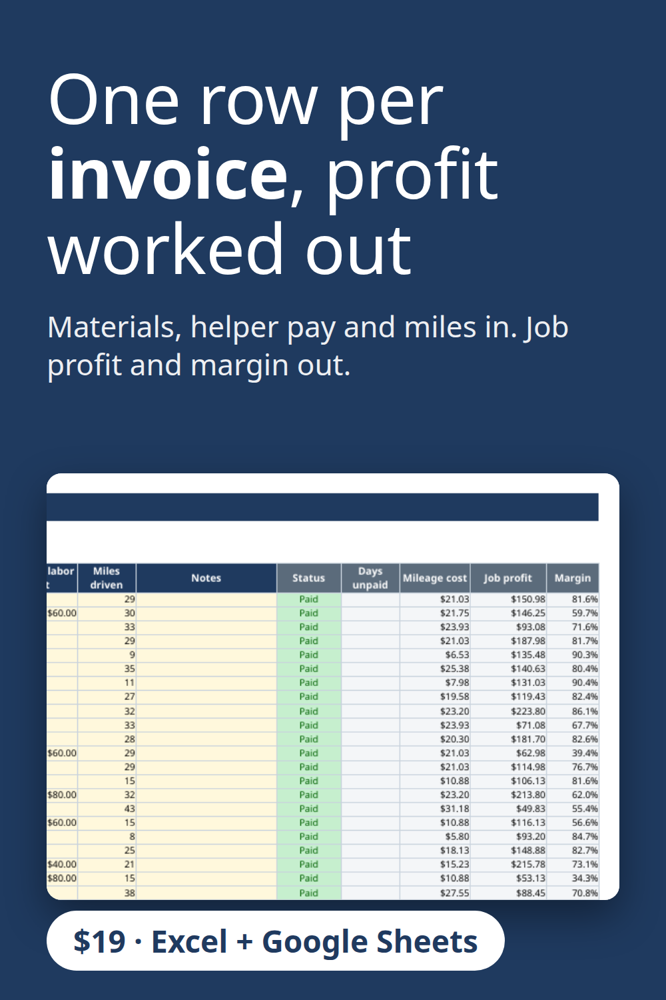

Type one row per invoice with materials, helper pay and miles driven, and the sheet calculates status, days unpaid, mileage cost, job profit and margin. Built for cleaning, lawn care, handyman, detailing and pressure washing businesses. Excel and Google Sheets, no macros. $19 instant download.
Get the $19 version on Gumroad
Built with the help of AI tools, then tested: every report number was recalculated separately.